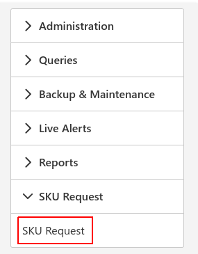
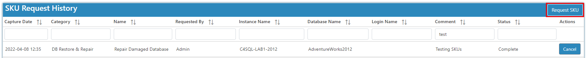
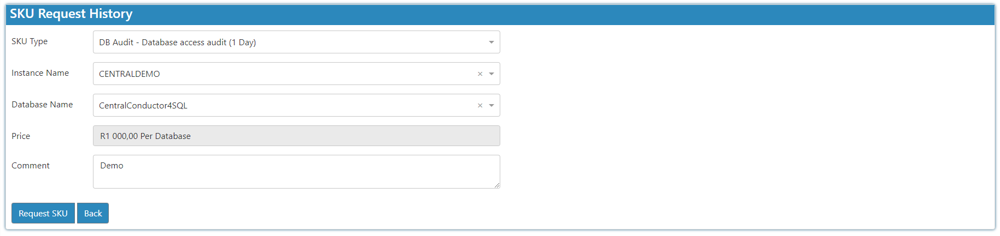
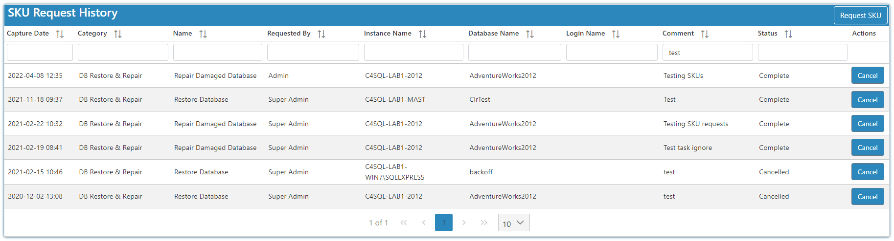

Introduction
Here we cater for if you don't have any database administrators and require help with a pay per request functionality.
To get started select the SKU Request Icon and select SKU Request:

Note
You must request this module to be enabled as it is not available by default.
SKU Request
To create a new request, click the button the SKU Request History screen.

Simply select the SKU type you would like help with and fill in the required fields.

SKU Types:
- DB Audit
- Database Access Audit
- Database blocking / deadlock audit
- Database Performance Audit
- SQL Instance full audit (all databases)
- SQL Server Environment full audit (all databases & all instances)
- SQL Server Instance full audit (all database)
- DB Maintenance
- Database Maintenance Package
- DB Restore & Repair
- Repair Damaged Database
- Restore Database
- Restore Database & Transaction log
- DBA Time & Materials
- Corrupt Database Restore & Data Recovery
- Data Archiving
- Database Index Tuning
- Database Space Resolution
- Failing Job Resolution
- Off Site Backups
- Replication failures
- SQL Query Performance Tuning
- SQL Log Shipping
- Setup Log Shipping
- Setup Log Shipping Monitoring & Alerts
- Troubleshoot & Resolve Log Shipping
- SQL Login & User Management
- Create Database User
- Create SQL Instance Login
- Delete Database User
- Login & User Audit
- Maintain Database User
- Maintain SQL Instance Login
- Remove SQL Instance Login
- SQL Server Installation, Configuration & Upgrade
- Apply SQL Server Service Pack
- Install New SQL Server Clustered Instance
- Install New SQL Server Instance
- SQL Server Version Change
- Upgrade SQL Server
- SQL Server Replication
- Add Articles to Existing Publication
- Once off Assessment of Existing Transactional Replication Setup
- Setup Transactional Replication Monitoring and Alerts
- Setup Transactional Replication Publication
- Setup Transactional Subscription
- Troubleshoot and Resolve Transactional Replication
SKU Request History Report

Statuses
- Pending - received and awaiting action.
- In Progress - opened and in progress.
- Complete - sku request has been completed.
- Cancelled - sku request has been cancelled.
Note
When logging a ticket there will be an email trail linked to the user that logged the ticket. Statuses are refreshed every 5 minutes.
Login Name is a not yet implemented functionality.